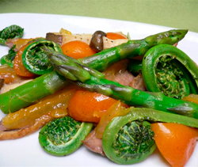

鴨肉と春野菜と金柑のグリル
- 調理時間：30 分
- （一人当たり）
- カロリー：127kcal
- たんぱく質：6.3g
- 脂質：9.1g
- 塩分：0.8g

＜４人分＞
- 鴨肉（鶏肉でも良い）
- １００ｇ
- コゴミ
- ８０ｇ
- アスパラガス
- １束
- エリンギ
- １パック
- 金柑
- ４個
- 塩
- 少々
- コショウ
- 少々
- 植物油
- 少々

- 鴨肉はスライスして、塩、コショウ（分量外）を振る。
- アスパラガスとエリンギは食べやすい大きさに切る。金柑は４～６等分のくし切りにする。
- コゴミは茎の硬い部分は切り落とし、長さ半分に切る。
- フライパンを熱して油をしき、鴨肉を炒め、８分通り火が通ったら、野菜類と金柑を加えてさらに炒める。
- 食材に火が通ったら、塩、コショウで味をととのえる。
鴨肉と春野菜と金柑のグリル
春の食材が店頭に出始め、季節の移り変わりを感じます。春の山菜のコゴミには、ビタミン類やカルシウムが多く、よい香りとほろ苦い味が食欲を増進させます。香りの高い食材は「気」のめぐりをよくする効果がありますので、ストレスを溜め込みやすい冬から春におすすめです。アスパラガスには、「アスパラギン」という栄養素が含まれていて、新陳代謝やたんぱく質の合成を高める働きがあるため、疲労回復に効果的。
アクセントに使用した金柑には、ビタミンＣ、カロテン、カルシウムが多く、さらにビタミンＣの吸収を助けるビタミンＰが豊富。そのため、風邪予防にはもってこいの果物といえます。最近の金柑は皮が薄いので食べやすくお料理とも合わせやすいので挑戦してみてくださいね。